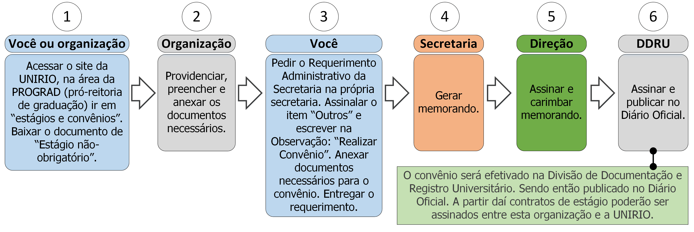

15.5 Realizar convênio

15.5.1 Descrição
Para realização de estágios há necessidade de que seja efetivado um convênio entre a UNIRIO e a organização que oferta o estágio. Para isso deve seguir os seguintes passos:
- A. Acesse o site da UNIRIO na área da PROGRAD, acesse “estágios e convênios” (http://www.unirio.br/prograd/estagios-e-convenios);
- B. Verifique se a organização já não é conveniada.
- C. Baixe a minuta “estágio não-obrigatório”
- D. A organização deverá preencher e anexar os documentos necessários (ver documentos na seção 15.5.2);
- E. Peça o Requerimento Administrativo da Secretaria;
- F. Assinale o item “Outros” e preencha no campo Observação: “Realizar convênio”;
- G. Anexe os documentos necessários (ver documentos na seção 15.5.2) ao requerimento;
- H. Entregue o requerimento;
- I. A secretaria gerará o memorando de realização de convênio;
- J. A direção assinará e carimbará o memorando (ver regra 1 na seção 15.5.3);
- K. A Divisão de Documentação e Registro Universitário assinará e publicará o convênio no Diário Oficial (ver regra 2 na seção 15.5.3).
15.5.2 Documentos necessários
- Minuta de estágio em 5 vias, assinadas e rubricadas pela organização (passo B na seção 15.5.1);
- Contrato social da organização;
- CNPJ e cópia do RG do representante da instituição com a qual se deseja firmar o convênio;
15.5.3 Regras
- 1. Prazo de solicitação: A Secretaria e direção (juntas) têm até 5 dias úteis para enviar o memorando à Divisão de Documentação e Registro Universitário.
- 2. Prazo de convênio: A Divisão de Documentação e Registro Universitário tem até 15 dias úteis para realizar o convênio.